Linear Word Problems
1At a community meeting there are double the number of women than men and triple number of children than the total of men and women combined. How many men, women and children are there if 96 people attend the meeting?
2A an barrel of oil has 7/8 of its content removed. Then, it is filled with 38 liters and the total content is 3/5 the capacity of the barrel. Calculate the total capacity of the barrel.
3A farm has pigs and turkeys. In total, there are 35 heads and 116 paws. How many pigs and turkeys are there on the farm?
4Peter went on a road trip, during which time 20 liters of gasoline were consumed. However, he completed the trip in two stages. In the first, he consumed 2/3 of the gasoline that was in the tank and in the second stage, half of the gasoline that he had left in the tank.
1.Determine the number of liters of gasoline that were in the tank before the trip.
2.Determine the number of liters consumed at each stage.
5In a bookstore, Anne buys a novel with a third of her money and a comic with two-thirds of what remained. When she left the bookstore, she had $12. How much money did Anne have before arriving at the store?
6 A clock sounds to indicate the time of 3 o'clock. At what time between 3 and 4 will the hour and minute needles overlap?
7 A clock sounds to indicate the time of 2 o'clock. At what time will its needles form a right angle for the first time?
8 A truck leaves a city at a speed of 40 mph. An hour later, a car leaves the same city and travels in the same direction at a speed of 60 mph.
1.How many hours after leaving the city will the car reach the truck?
2.What is the distance from the city where the car will reach the truck?
9 At 9 a.m., two cyclists simultaneously leave their houses and travel towards each other on the same road. Houses A and B are located 130 miles away from each other. If the cyclist who leaves from House A pedals at a constant speed of 30 mph, and the cyclist who leaves from House B travels at 20 mph, how far from House A will the two meet and at what time?
10 A faucet takes 3 hours to fill a water tank, and another faucet takes four hours to fill a tank of the same size. How long will it take to fill a tank of the same size if both faucets are distributing water together into the same tank?
11 A golden brick of 0.950 purity weighs 6300 grams. What amount of pure copper should be added to lower its purity to 0.900?
1
At a community meeting there are double the number of women than men and triple number of children than the total number of men and women combined. How many men, women and children are there if 96 people attend the meeting?
Men x
Women 2x
Children 3 · (x + 2x) = 3 · 3x = 9x
x + 2x + 9x = 96
12x = 96 x = 8
Men 8
Women 2 · 8 = 16
Children 9 · 8 = 72
2
A an barrel of oil has 7/8 of its content removed. Then, it is filled with 38 liters and the total content is 3/5 the capacity of the barrel. Calculate the total capacity of the barrel.
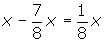
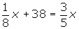
3
A farm has pigs and turkeys. In total, there are 35 heads and 116 paws. How many pigs and turkeys are there on the farm?
Pigs x
Turkeys 35 − x
4x + 2 · (35 − x) = 116
4x + 70 − 2x = 116
2x = 46 x = 23
Pigs 23
Turkeys 35 − 23 = 12
4
Peter went on a road trip, during which time 20 liters of gasoline were consumed. However, he completed the trip in two stages. In the first, he consumed 2/3 of the gasoline that was in the tank and in the second stage, half of the gasoline that he had left in the tank.
1.Determine the number of liters of gasoline that were in the tank before the trip.
First stage. 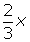
Second stage. 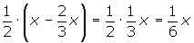
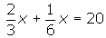
2. Determine the number of liters consumed at each stage.
First stage. 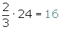
Second stage. 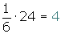
5
In a bookstore, Anne buys a novel with a third of her money and a comic with two-thirds of what remained. When she left the bookstore, she had $12. How much money did Anne have before arriving at the store?
Total x
Novel 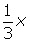
Comic 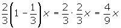
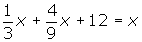
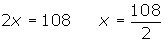
6
A clock sounds to indicate the time of 3 o'clock. At what time between 3 and 4 will the hour and minute needles overlap?
Keep in mind that the angle or arc representing the minute hand's position is always 12 times greater than the arc that describes the hour hand.

x is the arch that describes the needle hourly.
(15 + x) is the arch that describes the minute hand.
15 + x = 12x
x = 15/11 min
The needles will overlap at 3:16 and 21 seconds.
7
A clock sounds to indicate the time of 2 o'clock. At what time will its needles form a right angle for the first time?
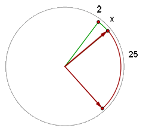
Turning clockwise, the needles will form a right angle approximately at 2:25. Therefore, let x be the arc that describes the hour needle.
x is the arc that describes the hour needle.
25 + x, is the arc that describes the minute hand.
25 + x = 12x
x = 25/11 min
The clock will form a 90 ° angle at 2:27 and 16 seconds.
8
A truck leaves a city at a speed of 40 mph. An hour later, a car leaves the same city and travels in the same direction at a speed of 60 mph.
1. How many hours after leaving the city will the car reach the truck?
d1 = d2
40t = 60 (t − 1)
40t = 60t − 60 40t − 60t = −60 −20t = −60
t = 3h
As the car leaves the city one hour later than the truck, the time it will take to reach the truck will be 2 hours.
2. What is the distance from the city where the car will reach the truck?
d1 = 40 · 3 = 120 miles.
9
At 9 am, two cyclists simultaneously leave their houses and travel towards each other on the same road. Houses A and B are located 130 miles away from each other. If the cyclist who leaves from House A pedals at a constant speed of 30 mph, and the cyclist who leaves from House B travels at 20 mph, how far from House A will the two meet and at what time?
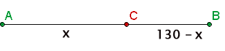
30t + 20t = 130 50t = 130
t = 130/50 = 2 h 36 min
They will meet at 11:36 am.
dAC = 30 · 130/50 = 78 miles
10
A faucet takes 3 hours to fill a water tank and another faucet takes four hours to fill a tank of the same size. How long will it take to fill a tank of the same size if both faucets are distributing water together into the same tank?
In one hour the first faucet fills 1/3 of the tank.
In one hour the second faucet fills 1/4 of the tank.
In one hour two together faucets will have filled:
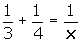

7x = 12 x = 12/7 hours
11
A golden brick of 0.950 purity weighs 6,300 grams. What amount of pure copper should be added to lower its purity to 0.900?
| Gold | Copper | Total | |
|---|---|---|---|
| No. of g | 6,300 | X | 6,300 + x |
| Pure Gold | 0.950 · 6,300 | 0.900 · (6,300 + x) |
0.900 · (6,300 + x) = 0.950 · 6,300
5,670 + 0.900x = 5,985
0.900x = 315 x = 315/0.900 = 350
Copper 350 grams